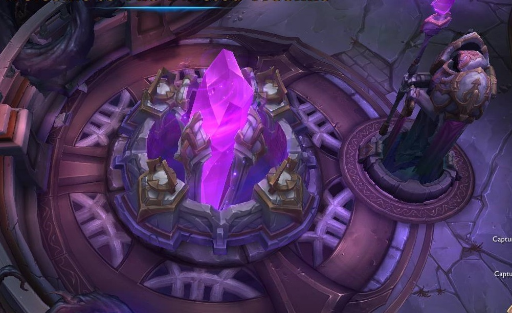
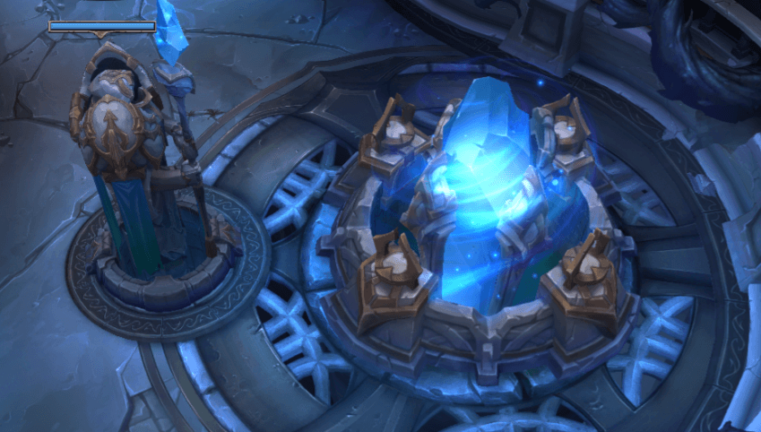

Um mapa menor que Summoner’s Rift, Twisted Treeline tem configuração horizontal, com duas rotas flanqueando uma área neutra. Duas torres estão posicionadas ao lado de cada rota, e o nexus é defendido por uma única torre. Cada equipe é composta de três campeões, e cada campeão surge no nível 3 com uma quantidade considerável de ouro. O tamanho reduzido do mapa e a curva de nível acelerada resultam em um jogo de menor duração e maior contagem de abates.
 O objetivo de Twisted Treeline é simples - destrua o nexus do inimigo. Para fazer isso, os campeões devem percorrer um dos dois diferentes caminhos para atacar seu inimigo nos pontos mais fracos que podem explorar. Ambas as equipes têm suas rotas defendidas por numerosas torres. Cada torre aumenta a força quanto mais próximo ela chega ao seu respectivo nexus e cada torre deve ser eliminada para obter acesso à próxima torre nessa faixa.